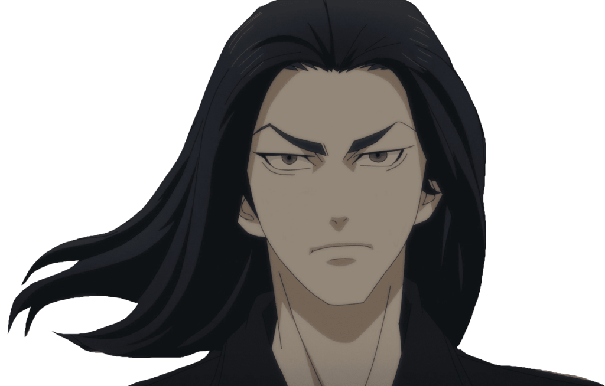
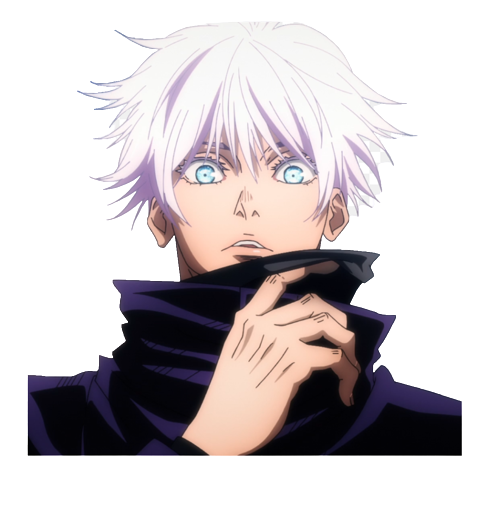

Eren Jaeger
Attack On Titan

Eren Jaeger is the main protagonist in one of the biggest anime of recent times, Attack on Titan. What started as a very linear plot line that has over time become one of the most interesting and well written fanstasy stories that has ever been introduced to the medium. It has quickly become the show that I recommend to everyone, whether they tend to watch a lot of anime or not. It has enough depth for anyone to enjoy. IMDB has even rated the top 100 TV episodes of all time, including shows such as Game of Thrones and Breaking Bad. Even with those shows thrown into the mix, Attack on Titan holds 3 positions in the top 5 of the list.
Baji Keisuke
Tokyo Revengers
Baji Keisuke is a hybrid protagonist/antagonist in a new title, Tokyo Revengers. The show is action packed from start to finish, with great animation and an incredible story that leaves you wanting more after every episode. It ties together multiple timelines in a very interesting way, allowing someone from the future to travel back in time and altar the past to directly influence the future that they have come from. Another show that I highly recommend, although it can be quite graphic for some peoples' tastes.
Gojo Satoru
Jujutsu Kaisen
Gojo Satoru is a fan favourite for anyone that has seen Jujutsu Kaisen. He is everything that you want out of an action anime packed into one single character. From his calm and confident demeanor to his unmatched power and skill, anytime he is on the screen, it is sure to satisfy the craving for action. Jujutsu Kaisen is an amazing show that has quickly become one of the highest rated anime of all time, and is another one of those shows that can be enjoyed by anyone!